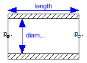

This package provides functions to compute pressure losses due to wall friction in a pipe. Every correlation is defined by a package that is derived by inheritance from the package WallFriction.PartialWallFriction. The details of the underlying pipe wall friction model are described in the UsersGuide. Basically, different variants of the equation
dp = λ(Re,D)*(L/D)*ρ*v*|v|/2
are used, where the friction loss factor λ is shown in the next figure:

| Name | Description |
|---|---|
| Partial wall friction characteristic (base package of all wall friction characteristics) | |
| No pipe wall friction, no static head | |
| Pipe wall friction in the laminar regime (linear correlation) | |
| Pipe wall friction in the quadratic turbulent regime (simple characteristic, mu not used) | |
| Pipe wall friction in the laminar and quadratic turbulent regime (simple characteristic) | |
| Pipe wall friction in the whole regime (detailed characteristic) | |
| Pressure loss in pipe due to wall friction and gravity (only for test purposes; if needed use Pipes.StaticPipe instead) |
 Modelica.Fluid.Pipes.BaseClasses.WallFriction.TestWallFrictionAndGravity
Modelica.Fluid.Pipes.BaseClasses.WallFriction.TestWallFrictionAndGravity
This model describes pressure losses due to wall friction in a pipe and due to gravity. It is assumed that no mass or energy is stored in the pipe. Correlations of different complexity and validity can be seleted via the replaceable package WallFriction (see parameter menu below). The details of the pipe wall friction model are described in the UsersGuide. Basically, different variants of the equation
dp = λ(Re,D)*(L/D)*ρ*v*|v|/2
are used, where the friction loss factor λ is shown in the next figure:
By default, the correlations are computed with media data at the actual time instant. In order to reduce non-linear equation systems, parameter use_nominal provides the option to compute the correlations with constant media values at the desired operating point. This might speed-up the simulation and/or might give a more robust simulation.
Extends from Modelica.Fluid.Interfaces.PartialTwoPortTransport (Partial element transporting fluid between two ports without storage of mass or energy).
| Type | Name | Default | Description |
|---|---|---|---|
| replaceable package Medium | PartialMedium | Medium in the component | |
| Length | length | Length of pipe [m] | |
| Diameter | diameter | Inner (hydraulic) diameter of pipe [m] | |
| Length | height_ab | 0.0 | Height(port_b) - Height(port_a) [m] |
| Length | roughness | 2.5e-5 | Absolute roughness of pipe (default = smooth steel pipe) [m] |
| Boolean | use_nominal | false | = true, if mu_nominal and rho_nominal are used, otherwise computed from medium |
| DynamicViscosity | mu_nominal | Medium.dynamicViscosity(Medi... | Nominal dynamic viscosity (e.g. mu_liquidWater = 1e-3, mu_air = 1.8e-5) [Pa.s] |
| Density | rho_nominal | Medium.density_pTX(Medium.p_... | Nominal density (e.g. rho_liquidWater = 995, rho_air = 1.2) [kg/m3] |
| Assumptions | |||
| Boolean | allowFlowReversal | system.allowFlowReversal | = true to allow flow reversal, false restricts to design direction (port_a -> port_b) |
| Advanced | |||
| AbsolutePressure | dp_start | 0.01*system.p_start | Guess value of dp = port_a.p - port_b.p [Pa] |
| MassFlowRate | m_flow_start | system.m_flow_start | Guess value of m_flow = port_a.m_flow [kg/s] |
| MassFlowRate | m_flow_small | system.m_flow_small | Small mass flow rate for regularization of zero flow [kg/s] |
| Boolean | show_Re | false | = true, if Reynolds number is included for plotting |
| Boolean | from_dp | true | = true, use m_flow = f(dp), otherwise dp = f(m_flow) |
| AbsolutePressure | dp_small | system.dp_small | Within regularization if |dp| < dp_small (may be wider for large discontinuities in static head) [Pa] |
| Diagnostics | |||
| Boolean | show_T | true | = true, if temperatures at port_a and port_b are computed |
| Boolean | show_V_flow | true | = true, if volume flow rate at inflowing port is computed |
| Type | Name | Description |
|---|---|---|
| FluidPort_a | port_a | Fluid connector a (positive design flow direction is from port_a to port_b) |
| FluidPort_b | port_b | Fluid connector b (positive design flow direction is from port_a to port_b) |
model TestWallFrictionAndGravity
"Pressure loss in pipe due to wall friction and gravity (only for test purposes; if needed use Pipes.StaticPipe instead)"
extends Modelica.Fluid.Interfaces.PartialTwoPortTransport;
replaceable package WallFriction =
Modelica.Fluid.Pipes.BaseClasses.WallFriction.QuadraticTurbulent
constrainedby
Modelica.Fluid.Pipes.BaseClasses.WallFriction.PartialWallFriction
"Characteristic of wall friction";
parameter SI.Length length "Length of pipe";
parameter SI.Diameter diameter "Inner (hydraulic) diameter of pipe";
parameter SI.Length height_ab = 0.0 "Height(port_b) - Height(port_a)";
parameter SI.Length roughness(min=0) = 2.5e-5
"Absolute roughness of pipe (default = smooth steel pipe)";
parameter Boolean use_nominal = false
"= true, if mu_nominal and rho_nominal are used, otherwise computed from medium";
parameter SI.DynamicViscosity mu_nominal = Medium.dynamicViscosity(
Medium.setState_pTX(
Medium.p_default, Medium.T_default, Medium.X_default))
"Nominal dynamic viscosity (e.g. mu_liquidWater = 1e-3, mu_air = 1.8e-5)";
parameter SI.Density rho_nominal = Medium.density_pTX(Medium.p_default, Medium.T_default, Medium.X_default)
"Nominal density (e.g. rho_liquidWater = 995, rho_air = 1.2)";
parameter Boolean show_Re = false
"= true, if Reynolds number is included for plotting";
parameter Boolean from_dp=true
" = true, use m_flow = f(dp), otherwise dp = f(m_flow)";
parameter SI.AbsolutePressure dp_small = system.dp_small
"Within regularization if |dp| < dp_small (may be wider for large discontinuities in static head)";
SI.ReynoldsNumber Re = Modelica.Fluid.Pipes.BaseClasses.CharacteristicNumbers.ReynoldsNumber_m_flow(
m_flow, noEvent(if m_flow>0 then mu_a else mu_b), diameter) if
show_Re "Reynolds number of pipe flow";
protected
SI.DynamicViscosity mu_a = if not WallFriction.use_mu then 1.e-10 else
(if use_nominal then mu_nominal else Medium.dynamicViscosity(state_a));
SI.DynamicViscosity mu_b = if not WallFriction.use_mu then 1.e-10 else
(if use_nominal then mu_nominal else Medium.dynamicViscosity(state_b));
SI.Density rho_a = if use_nominal then rho_nominal else Medium.density(state_a);
SI.Density rho_b = if use_nominal then rho_nominal else Medium.density(state_b);
Real g_times_height_ab(final unit="m2/s2") = system.g*height_ab
"Gravitiy times height_ab = dp_grav/d";
// Currently not in use (means to widen the regularization domain in case of large difference in static head)
final parameter Boolean use_x_small_staticHead = false
"Use dp_/m_flow_small_staticHead only if static head actually exists";
/*abs(height_ab)>0*/
SI.AbsolutePressure dp_small_staticHead = noEvent(max(dp_small, 0.015*abs(g_times_height_ab*(rho_a-rho_b))))
"Heuristic for large discontinuities in static head";
SI.MassFlowRate m_flow_small_staticHead = noEvent(max(m_flow_small, (-5.55e-7*(rho_a+rho_b)/2+5.5e-4)*abs(g_times_height_ab*(rho_a-rho_b))))
"Heuristic for large discontinuities in static head";
equation
if from_dp and not WallFriction.dp_is_zero then
m_flow = WallFriction.massFlowRate_dp_staticHead(dp, rho_a, rho_b, mu_a, mu_b, length, diameter,
g_times_height_ab, roughness, if use_x_small_staticHead then dp_small_staticHead else dp_small);
else
dp = WallFriction.pressureLoss_m_flow_staticHead(m_flow, rho_a, rho_b, mu_a, mu_b, length, diameter,
g_times_height_ab, roughness, if use_x_small_staticHead then m_flow_small_staticHead else m_flow_small);
end if;
// Energy balance, considering change of potential energy
port_a.h_outflow = inStream(port_b.h_outflow) + system.g*height_ab;
port_b.h_outflow = inStream(port_a.h_outflow) - system.g*height_ab;
end TestWallFrictionAndGravity;